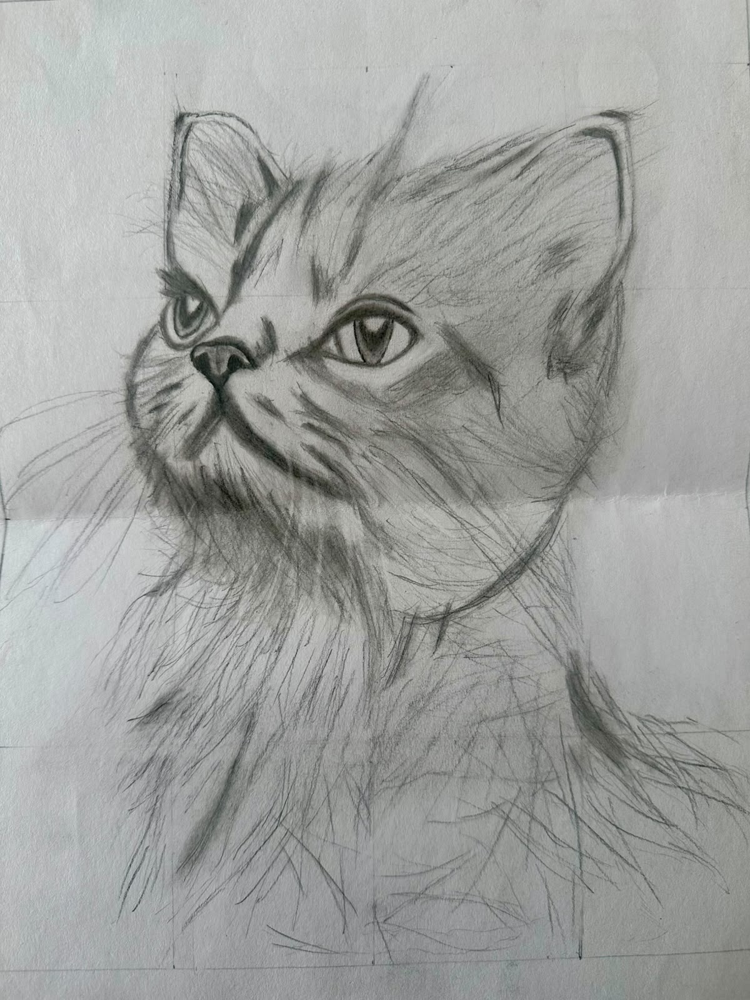
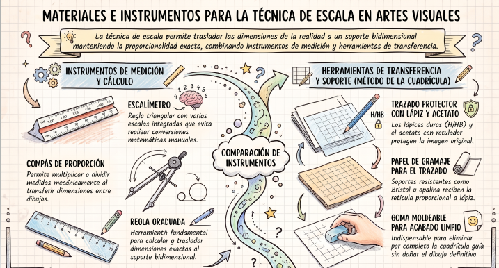

Licencia Creative Commons Zero (CC0).

La técnica de escala: en las artes visuales es el método de proporción y medición utilizado para representar un objeto, figura o espacio manteniendo una relación matemática exacta y proporcional entre su tamaño real y el tamaño en el que se plasma en la obra (ya sea aumentándolo, reduciéndolo o representándolo a tamaño natural).
En el dibujo y la pintura, la escala también hace referencia al estudio de las gradaciones tonales (escala de valores o claroscuro) o cromáticas (escala de colores), pero en su sentido compositivo y estructural, es la herramienta que permite calcular y trasladar las dimensiones de la realidad al soporte bidimensional con absoluta precisión.
Principales características:
- Proporcionalidad matemática: Define una relación constante (por ejemplo, escala 1:2 donde el dibujo es la mitad del original, o 2:1 donde es el doble), asegurando que ninguna parte de la obra se deforme de manera aislada.
- Sentido de magnitud y perspectiva: Permite al espectador comprender el tamaño real de los elementos representados mediante la comparación con objetos de referencia (como una figura humana junto a un edificio).
- Versatilidad de aplicación: Se utiliza tanto en el dibujo técnico e hiperrealista para transferir bocetos con exactitud (mediante la famosa técnica de la cuadrícula o el uso de un pantógrafo) como en el arte monumental o el diseño de maquetas.
- Control compositivo: Ayuda a equilibrar el peso visual de los elementos dentro del formato, determinando qué ocupa un rol protagónico y qué pasa a un plano secundario según su tamaño relativo.
Materiales Necesarios:
- Instrumentos de medición y trazado:
- Regla graduada y escalímetro: El escalímetro es una regla triangular especial que contiene diferentes escalas métricas integradas, permitiendo medir y calcular directamente sin necesidad de hacer conversiones matemáticas manuales.
- Compás de proporción: Útil para trasladar medidas de un dibujo a otro multiplicándolas o dividiéndolas de manera mecánica.
- Herramientas para transferencia (Método de la cuadrícula):
- Lápiz de grafito (HB o H): Para trazar las líneas de la cuadrícula de forma tenue.
- Acetato o plástico transparente y rotulador indeleble fino (opcional): Para dibujar una cuadrícula sobre la imagen de referencia sin dañarla.
- Soporte y materiales de dibujo:
- Papel de dibujo (de buen gramaje, como Bristol u opalina): Sobre el cual se replicará la cuadrícula proporcional a lápiz antes de realizar el dibujo definitivo.
- Goma moldeable: Esencial para borrar con limpieza las líneas de la retícula o cuadrícula una vez que el dibujo a escala ha sido completado.
Para comprender más sobre el tema observa el siguiente video:
Para comprender más sobre el tema analiza la siguiente información:

¡Es tu turno, realiza la práctica de acuerdo a las indicaciones de tu maestro!